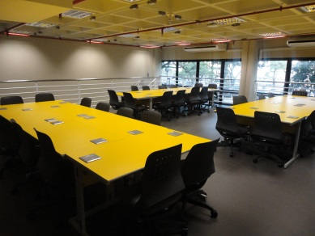

O que é a AGES
O objetivo do Curso de Bacharelado em Engenharia de Software é formar profissionais com sólida competência e conhecimento profundo de arquitetura de software, tecnologias e processos de desenvolvimento, de maneira a poder produzir software robusto e com qualidade, de maneira sistemática e eficiente, desde aplicativos simples até sistemas críticos de alta complexidade.
O domínio dos métodos e processos, para além das tecnologias e das técnicas, pressupõe a vivência de situações reais onde a aplicação desses conhecimentos é contextuada pelo cotidiano. A AGES - Agência Experimental de Engenharia de Software - nasce para trazer esse espaço de vivências para os alunos. Através da agência, aprofundamos a prática de formas de ensino aprendizagem que propiciam:
- A oportunidade de integração de forma estruturada dos conhecimentos absorvidos durante o curso;
- O enfrentamento de desafios de complexidades reais;
- O desenvolvimento do saber fazer, além do saber, e a reflexão sobre a ação;
- O desenvolvimento de trabalho em equipe e a reflexão sobre o comportamento profissional.
A AGES é componente curricular do Curso de Bacharelado em Engenharia de Software, integrada com as outras disciplinas do curso. O estudante passa pela dinâmica da Agência por 4 vezes durante seu curso. Estas passagens se dão em níveis diferentes de maturidade, propondo novos desafios e ajudando os estudantes a construírem progressivamente suas habilidades. Entre os objetivos do perfil do egresso deste curso, a autonomia deve especialmente ser trabalhada com os elementos da Agência.